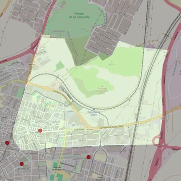

Nuestra Señora de la Paz
- Arciprestazgo
- Parla
- Población
- Parla
- Dirección postal
- c/ Pinto, 55
- Código postal
- 28982
- Extensión
- 4,63 km² (463 ha)
- Teléfono
- 916 833 107
- Correo electrónico
- parroquialapazparla@hotmail.com


Descargar mapaLímites según decreto
" Partiendo del punto de confluencia de la calle San Antón con la calle de San Roque, siguen por el eje de la calle San Roque, por el eje de la calle Milán y por el eje de la avenida Cerro del Rubal (en dirección noreste), por una línea recta imaginaria hasta el límite con los términos municipales de Parla-Pinto (en dirección este), por los límites de los términos municipales de Parla-Pinto (en dirección noroeste), por los límites de los términos municipales de Parla-Fuenlabrada (en dirección suroeste), por el eje de la autopista A-42 (en dirección suroeste), por el eje de la entrada Norte de la autopista A-42 que conecta con la calle Real (en dirección suroeste), por el eje de la calle Real (en dirección suroeste), por el eje de la calle Paloma (en dirección sureste), por el eje de la calle San Antón (a través de la plaza A. Marsillach; en dirección suroeste) hasta el encuentro con la calle San Roque, punto de partida”. (Decreto de rectificación de límites, B.O., Junio-2007, pág. 724)